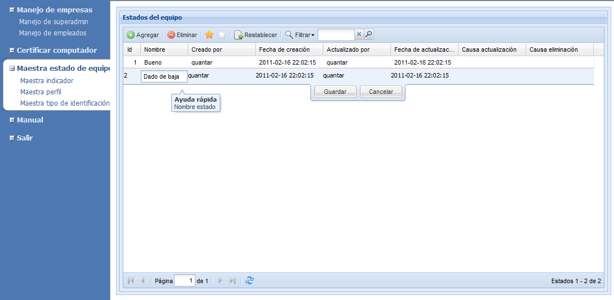
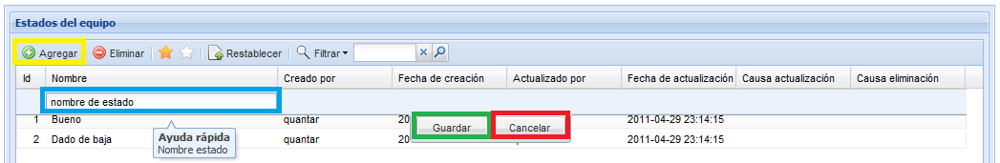
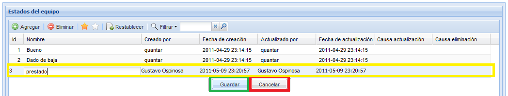
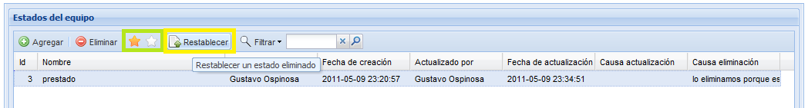

MANUAL DE USUARIO
TPM-QLabs - MAESTRA DE ESTADOS DEL EQUIPO
Esta información se utiliza para definir el estado de un equipo del sistema.

Figura 1. Pantalla de manejo de estados del equipo.
Agregar estado
Para agregar un usuario pulse el botón Agregar, diligencie el nombre del nuevo estado en la fila que aparece al inicio de la lista y pulse el botón Guardar. En la figura 2 se muestran los botones a tener en cuenta.
Actualizar
Para actualizar un estado, de doble click sobre el estado que desea modificar, edite sobre el campo que hay en la columna nombre y pulse el botón guardar, el sistema le preguntará porque razón desea actualizar esta información, digite la razón y pulse el botón aceptar. Luego el sistema le mostrara un breve mensaje en el que informa del éxito de la actualización. En la figura 3 se muestra como se sobre salta la fila que deseamos modificar y como se desplegan los botónos de guardar y cancelar.
Eliminar
Para eliminar un estado, seleccione de la lista el estado que desea eliminar, y pulse el botón eliminar, el sistema desplegara una pequeña ventana donde le preguntara si realmente desea eliminar el estado y porque razón desea eliminarlo, digite la razón y pulse el botón aceptar. Luego el sistema le mostrara un breve mensaje en el que informa del éxito de la eliminación. En la figura 4 se muestra la ventana de confirmación de eliminación de un registro.

Figura 4.Ventana de confirmación de borrado de estados.
Restablecer
Si se ha eliminado un estado, usted tiene la posibilidad de recuperar la información, seleccione la opción para ver los estados eliminados (estrella blanca), seleccione de la lista el estado que desea recuperar, y pulse el botón Restablecer, el sistema le preguntara porque razón usted desea restablecer el estado, digite la razón y pulse el botón aceptar. Luego el sistema le mostrara un breve mensaje en el que informa si se ha restablecido con éxito el estado. en la figura 5 se muestran los botones restablecer, y los botones para mostrar los estados que están habilitados y los que han sido eliminados.
Para agregar un usuario pulse el botón Agregar, diligencie el nombre del nuevo estado en la fila que aparece al inicio de la lista y pulse el botón Guardar. En la figura 2 se muestran los botones a tener en cuenta.

Figura 2.Pantalla para agregar un nuevo estado.
Figura 2.Pantalla para agregar un nuevo estado.
Actualizar
Para actualizar un estado, de doble click sobre el estado que desea modificar, edite sobre el campo que hay en la columna nombre y pulse el botón guardar, el sistema le preguntará porque razón desea actualizar esta información, digite la razón y pulse el botón aceptar. Luego el sistema le mostrara un breve mensaje en el que informa del éxito de la actualización. En la figura 3 se muestra como se sobre salta la fila que deseamos modificar y como se desplegan los botónos de guardar y cancelar.

Figura 3.Pantalla para modificar estado.
Figura 3.Pantalla para modificar estado.
Eliminar
Para eliminar un estado, seleccione de la lista el estado que desea eliminar, y pulse el botón eliminar, el sistema desplegara una pequeña ventana donde le preguntara si realmente desea eliminar el estado y porque razón desea eliminarlo, digite la razón y pulse el botón aceptar. Luego el sistema le mostrara un breve mensaje en el que informa del éxito de la eliminación. En la figura 4 se muestra la ventana de confirmación de eliminación de un registro.
Figura 4.Ventana de confirmación de borrado de estados.
Restablecer
Si se ha eliminado un estado, usted tiene la posibilidad de recuperar la información, seleccione la opción para ver los estados eliminados (estrella blanca), seleccione de la lista el estado que desea recuperar, y pulse el botón Restablecer, el sistema le preguntara porque razón usted desea restablecer el estado, digite la razón y pulse el botón aceptar. Luego el sistema le mostrara un breve mensaje en el que informa si se ha restablecido con éxito el estado. en la figura 5 se muestran los botones restablecer, y los botones para mostrar los estados que están habilitados y los que han sido eliminados.

Figura 5.Restablecer estado eliminado.
Figura 5.Restablecer estado eliminado.